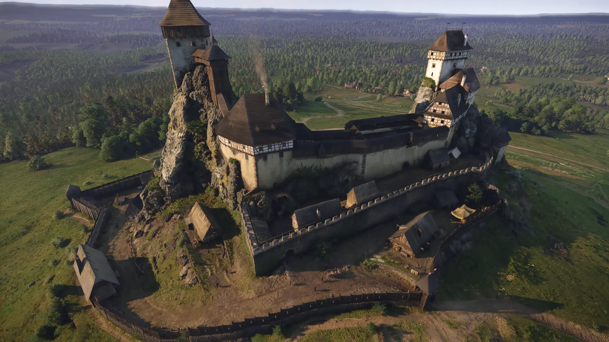
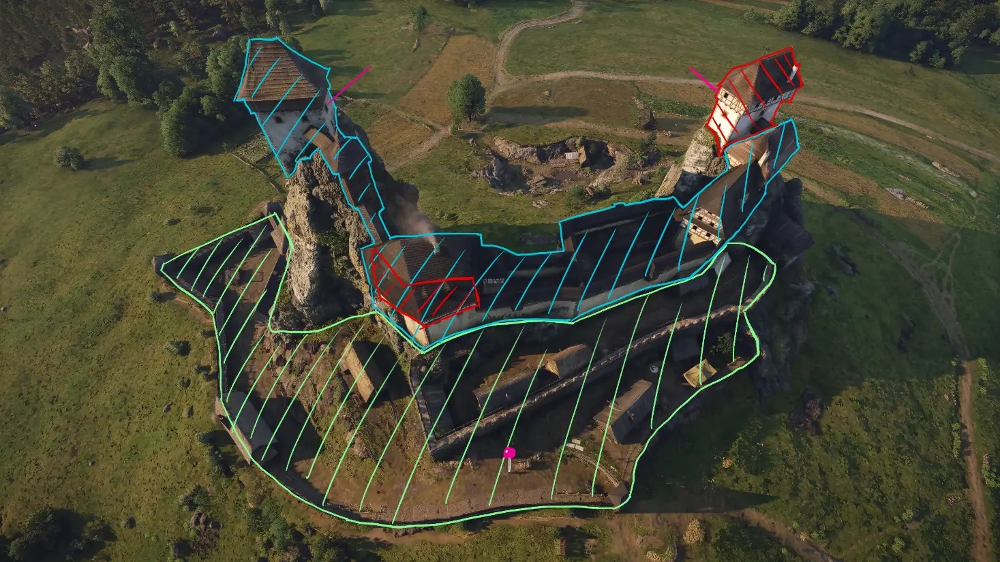
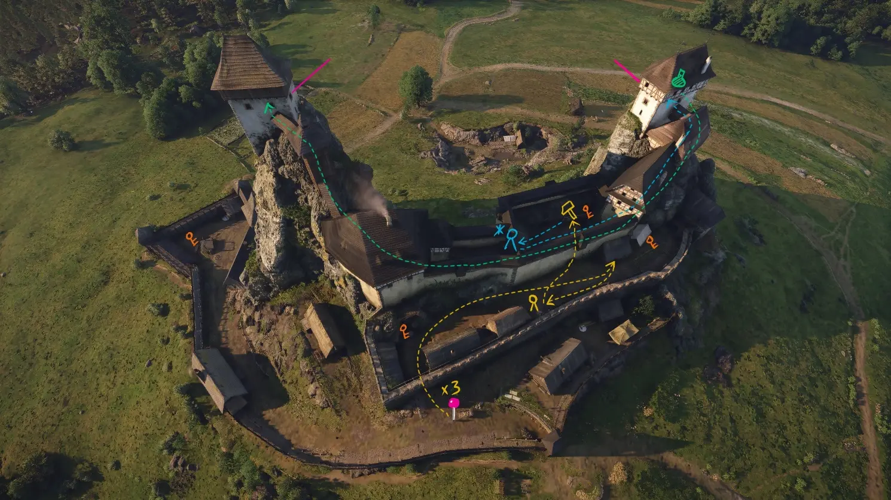
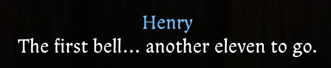
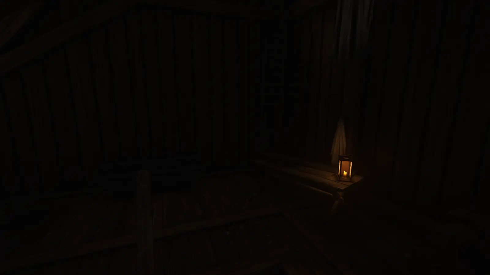
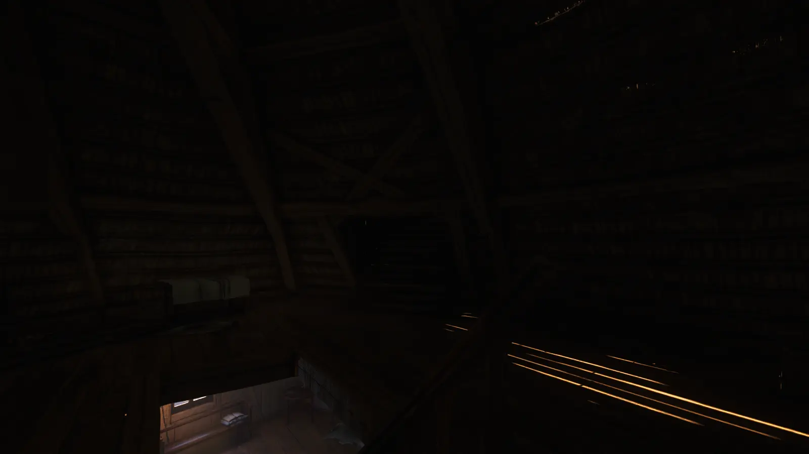

公共区域
用于观察、规划和完成前置劳动的低压力空间；只要不犯罪，玩家可以安全活动。
关卡分析 / 天国：拯救 II
《天国：拯救 II》城堡渗透关卡分析
一个限时城堡渗透任务，如何通过空间分区、动态身份、环境钟声与多种系统路线，同时服务初见玩家的紧张感和多周目玩家的自由度。
01 · 核心体验
亨利以囚犯和劳工身份从外围广场开始。为了到达少女塔顶层、找到身负重伤的托马斯队长，玩家必须逐步取得合法权限，或通过潜行、犯罪和系统漏洞绕开身份限制。
由下至上的空间推进同时也是社会身份的变化。搬运、打铁、帮厨等支线并非独立内容，而是动态改变玩家可以合法进入的区域。
查看完整中文版 PDF ↗
02 · 空间分区

用于观察、规划和完成前置劳动的低压力空间；只要不犯罪，玩家可以安全活动。
未获许可进入时，AI先警告并尝试劝离，为探索、潜行和走错路提供可恢复的后果。
一旦产生视线接触便可能触发逮捕或战斗，迫使玩家严格管理潜行路线与行动时机。
03 · 路线分析

| 路线 | 核心交换 | 风险 | 耗时 | 玩家要求 |
|---|---|---|---|---|
| 守法流程 | 用时间换安全 | 低 | 高 | 耐心与按部就班 |
| 水井捷径 | 用血量换位置 | 高 | 中 | 观察力与潜行 |
| 偷取退烧药 | 用犯罪换效率 | 中 | 低 | 探索与游戏知识 |
| 强闯速通 | 用沉浸感换速度 | 中 | 极低 | 地图背板与机制理解 |
| 正面战斗 | 用声誉换控制权 | 极高 | 高 | 战斗技巧 |
04 · 听觉倒计时
任务没有使用传统UI倒计时，而是通过城堡钟声和亨利的焦虑台词提示时间。玩家能感到“时间正在减少”，却无法精确知道还剩多少分钟。
钟声的目的不是禁止探索，而是防止玩家无限停留。它用叙事层面的紧张感推动行动，同时在数值层面保护RPG的探索体验。

05 · 复盘与改进
外围蓝区的巡逻密度高、路线交叉复杂；塔楼高潮段却以背对玩家的静态守卫为主。可在楼梯与走廊增加移动守卫，并调整关键房间守卫朝向。
退烧药捷径缺乏前置提示。可以通过神父或厨娘的一句环境对话提供逻辑线索，同时保留玩家自行发现的乐趣。
将局部光源移至阶梯附近，或在入口侧墙引入自然光。目标是在不添加突兀路径标记的前提下修正视觉暗示。

